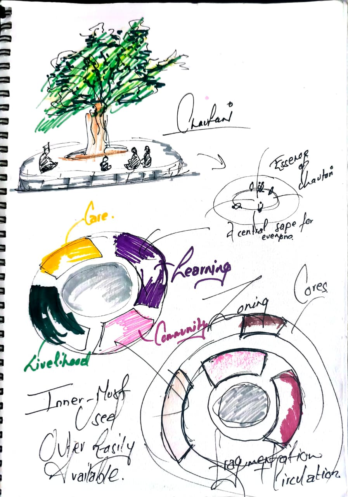
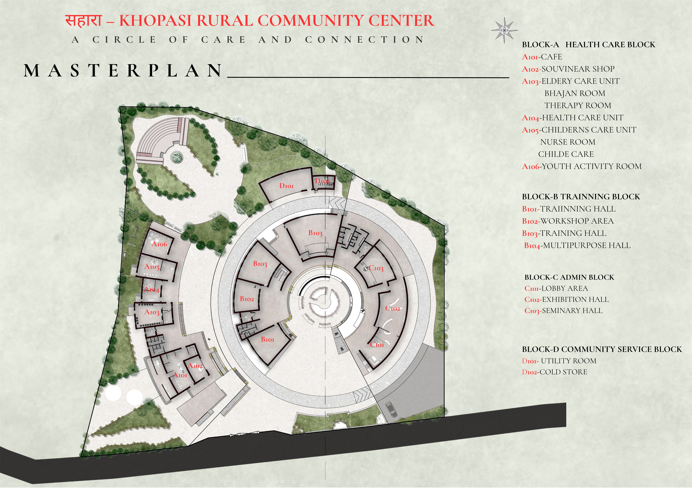
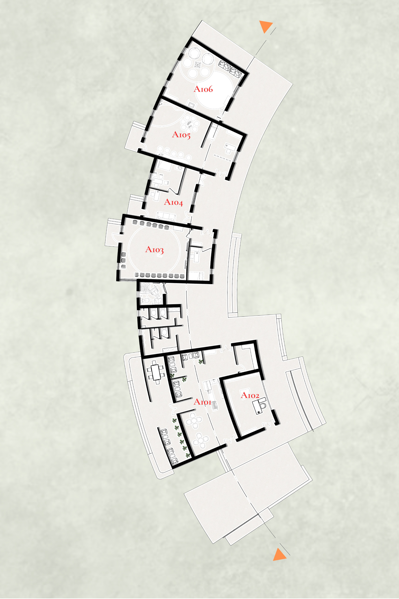
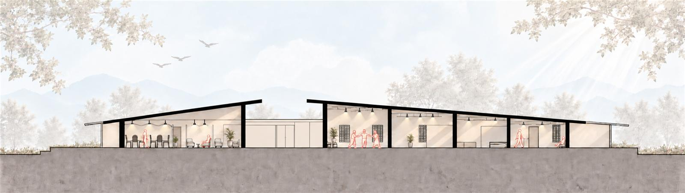
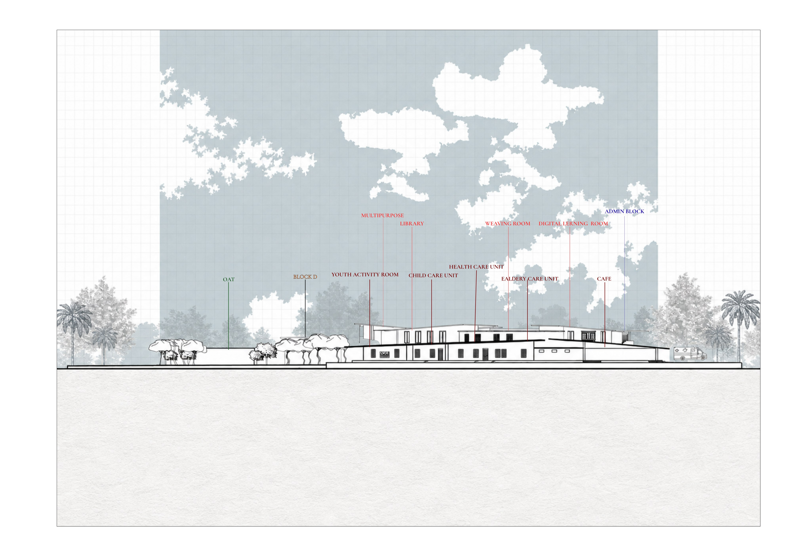
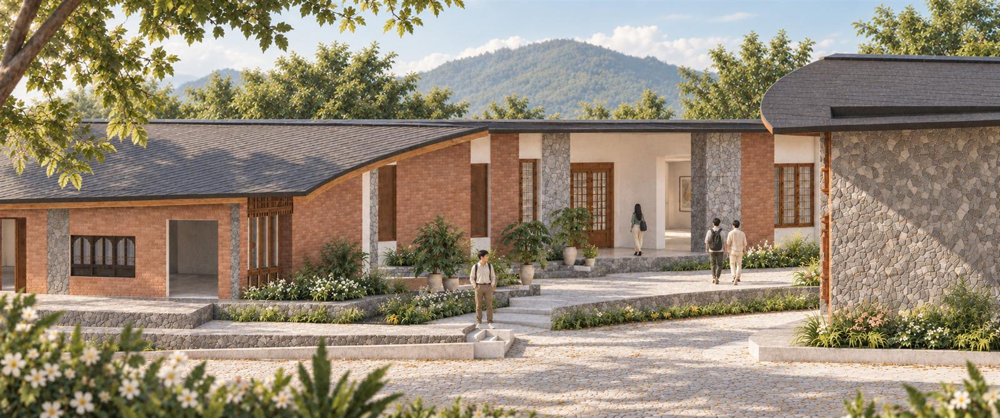

03 · Community architecture
साहाराKHOPASI RURALCOMMUNITY CENTRE
Brief
Design a rural community centre in Khopasi that gathers the services a village depends on, healthcare, learning, livelihood and everyday community life, in one place, so that care is never far from where people live.
Concept · साहारा, a circle of care
साहारा means support. The centre is arranged as a circle of care and connection: programmes placed around a single shared courtyard where the life of the community, waiting, working, children playing, becomes the heart of the building.






